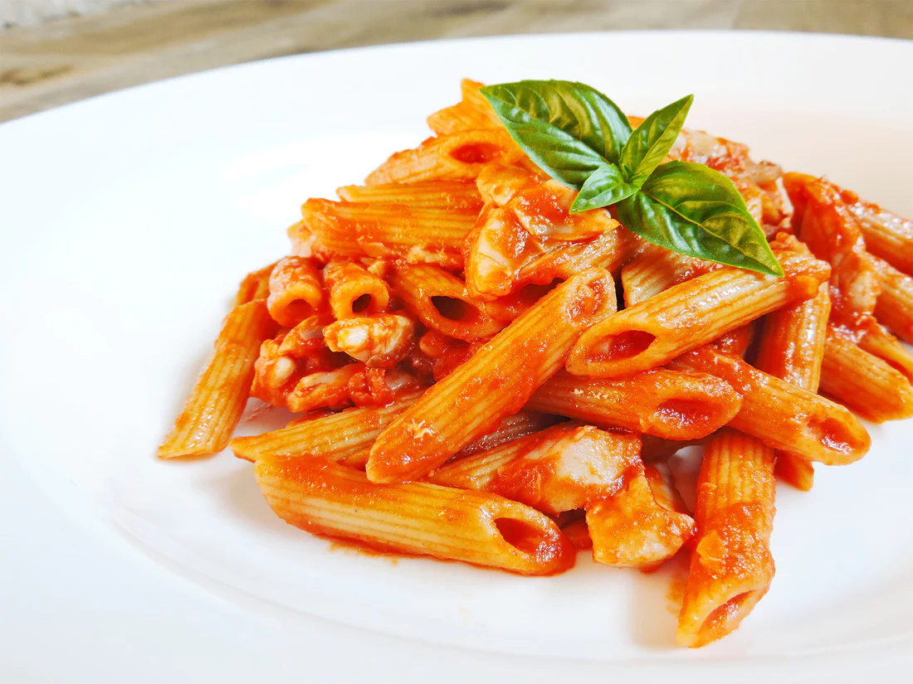

Penne al pomodoro
Ingredienti
Di seguito riportiamo gli ingredienti per preparare il nostro piatto
- Penne 500gr
- Pomodori 800gr
- Olio extravergine di oliva 2 cucch.
- Aglio a spicchi
- Erbe aromatiche
Preparazione
- Mettere sul fuoco una pentola contenente acua
- Soffriggere aglio ed erbe aromatiche
- Versare i pomodori nel soffritto
- Scolare la pasta e saltarla sulla padella
- Servire il piatto